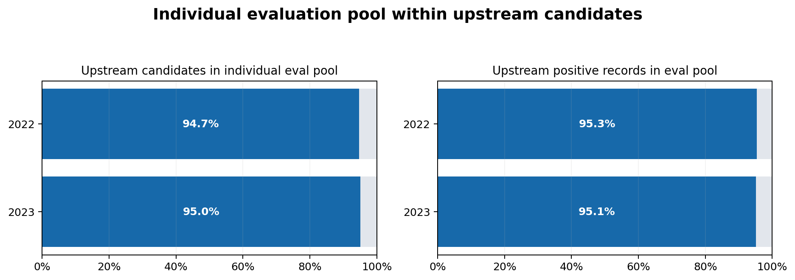

FraudLens audit-priority evaluation
Held-out 2022 and 2023 results. A hit means a provider later appeared in the two-year Scenario A exclusion label. It is not confirmed fraud or money saved. Isolation Forest ranks unusual decision-year billing without using exclusion labels.
Model and baseline comparison
| Method | Hits | Precision | Recall | Lift |
|---|
Evidence for the audit pilot
| Model | Additional exclusions vs. peer services rule | Shortlist places per exclusion | Historical Medicare payments | Average Precision (full year) |
|---|
A dash indicates no observed exclusions. Medicare payments describe historical billing exposure.
Paired differences in later exclusions
| Model comparison | Observed difference | 95% interval |
|---|
Differences are model A minus model B. Intervals that include zero leave room for a tie.
Download all four billing-rule comparisons · Download Average Precision by year
Hits by workload

Precision by workload

Evaluation pool

The two raw-payment rules found zero hits at the displayed capacities; P1's peer-adjusted services baseline found one 2022 hit. Random selection almost always found zero. The larger 1% and 5% lists, including AUC and bootstrap intervals, are in the evaluation summary.